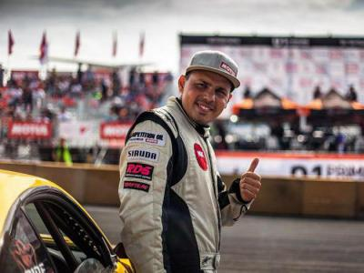

Автогонщики
Автогонщик – спортсмен, специалист в управлении автомобилем на предельных скоростях в специально отведенных местах – гоночных треках. Существует большое количество гоночных соревнований, в которых от автогонщика требуется проявлять мастерство в совершенно разных условиях.
Особенности профессии
Автогонки – это зрелищный спорт. Гонщик управляет специальным, произведённым на заказ, гоночным автомобилем. Каждый такой автомобиль эксклюзивен, совершенен, великолепен. Автогонщик по своим профессиональным качествам должен соответствовать этому чуду техники и инженерной мысли.
От того, насколько гонщик чувствует свой автомобиль и сливается с ним в едином порыве, зависит успех соревнований. Управление автомобилем — это определенная координация движений, у гонщика она опережает сознание. Это должны быть автоматические реакции, которые нарабатываются множеством повторений, зависят от опыта. Гонщик достаточно много времени уделяет тренировкам, поэтому, когда он участвует в соревнованиях в режиме реального времени, какие-то вещи у него получаются автоматически.
Автогонщик ведет серьезную подготовку к соревнованиям задолго до их начала. В его задачи входит: изучение топографии трассы, ведение гонки соответственно рельефу трассы; эксплуатация и управление гоночным автомобилем; теоретическая разработка эффективных маневров на трассе перед гонкой совместно с тренером или самостоятельно при прохождении трассы; оценка возможностей транспортного средства и участие в его усовершенствовании; регулярные тренировки при подготовке к гонке; психологическая подготовка к гонке.
Кандидат в гонщики должен обладать техническим складом ума, обладать отличными знаниями в области физики, уметь адаптироваться и ориентироваться в незнакомой местности. Пилот должен быть устойчив к физическим нагрузкам, эмоционально устойчивым, уметь прогнозировать развитие ситуации, быть уверенным в себе, способным пойти на риск, обладать отличной реакцией, острым зрением, хорошим глазомером и крепким здоровьем.
Обучиться на автогонщика можно в профильных учебных заведениях по специальности "Спорт", а также важно начать карьеру в картинге как можно раньше.
Плюсы и минусы профессии
Плюсы
Престижность, азарт, для любителей экстрима - невероятный выброс адреналина. Гонщиков называют адреналиновыми наркоманами.
Минусы
Опасность и серьезный риск, колоссальная ответственность. За автогонщиком стоят спонсоры, механики, целая команда, благодаря которой становится возможным участие в гонках. Груз ответственности перед ними очень сильно давит.
Автогонщик - это не столько профессия, сколько призвание. Пилот автомобиля, автогонщик, ничего не получает, кроме уважения и восхищения людей, которые за него болеют. И кубка, который стоит несколько сотен рублей. Есть суперпрофессиональные пилоты, их единицы в России, которые за свой труд получают деньги. Но в российском кольцевом спорте их не наберется и пяти человек. Подавляющее же большинство гонщиков делают это ради собственного удовольствия, вкладывают свои деньги в гонки. Наиболее талантливые, опытные, профессиональные находят возможность привлекать чужие деньги (деньги спонсоров). Как правило, автогонщики зарабатывают на жизнь в сфере, косвенно связанной с гонками – это может быть автомобильная журналистика, тренерская и инструкторская работа, подготовка автомобильных презентаций и т.п.
Виды автомобильных соревнований можно классифицировать по типам трасс, на которых проводятся состязания, по особенностям гоночной техники, по особенностям спортивного регламента и т. д.
От вида гонок зависит состав экипажа машины. Например в гонке на болиде по кольцу гонщик управляет машиной самостоятельно. А в галли экипаж машины состоит из двух человек: первый пилот – это водитель, второй пилот – это штурман.
Георгий Тумасович Чивчян
Георгий Тумасович Чивчян (21 января 1986, Красноярск) — российский автогонщик-дрифтер Чемпион Сибири 2012 года, трехкратный Чемпион России (2011, 2013, 2014), пилот Чемпионата Японии D1GP 2013 года, участник D1gp (2013 , 2014, 2015), чемпион Российской дрифт серии Gp 2017, 2018, 2019. 2018 и 2019 года — победитель FIA Intercontinental Drifting Cup. В настоящее время выступает в отделении Российской Дрифт Серии GP на Nissan Silvia S15 с мотором SR20DET, за команду ФОРВАРД-АВТО .
Гоча Чивчян против Drift Masters GP Рига: Все заезды